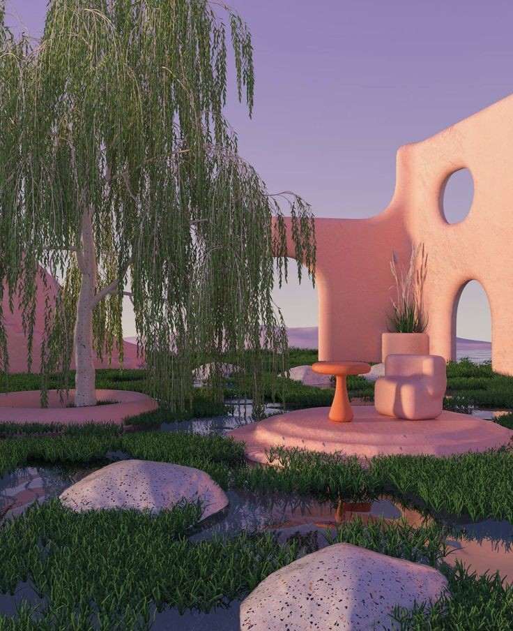

NOTICE OF CONTINUED WARMTH — District Four
Residents of District Four will be glad to know that the morning light in the eastern green corridor has been especially warm this week, as has been observed by multiple contributors whose routes take them through this area. The Department of Public Space notes that the botanical systems in this corridor are performing with particular richness.
A number of residents have noted that the seating near the corridor's northern end appears to be oriented differently than they remember orienting it, which is a charming variation, as seating that faces a new direction offers a new kind of morning.
(No action is required. The seating is comfortable in its current position.)
